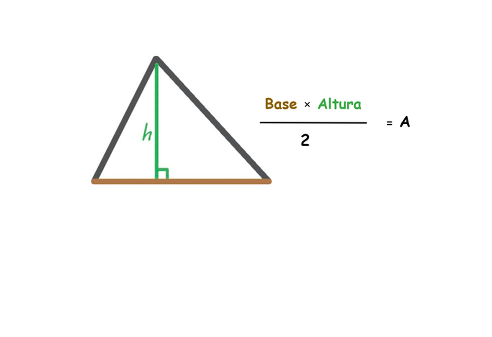
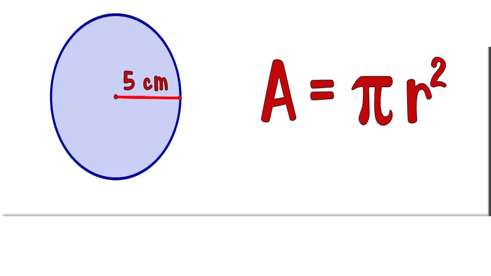
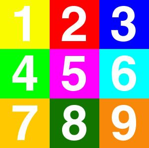

Universidad Tecnologica Metropolitana
Practicas PHP
1. Calcular el área de un triángulo recibiendo como entrada el valor de base y altura. 
2. Calcular el área de un círculo.
3. Leer de entrada 3 números y que indique cual es el mayor de ellos. 
4. Solicitar la edad y el sexo y dependiendo si es hombre o mujer y si puede votar o no
5.Elaborar un programa que calcule la nómina salarial neto, de unos obreros cuyo trabajo
se paga en horas.